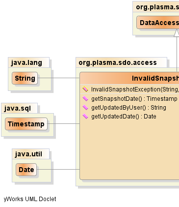
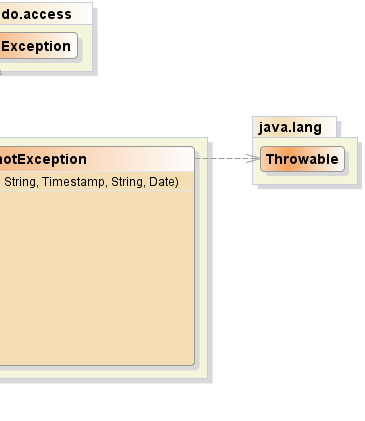

public class InvalidSnapshotException extends DataAccessException
|  |  |
| Constructor and Description |
|---|
InvalidSnapshotException(java.lang.String entityName,
java.lang.String currentUser,
java.sql.Timestamp snapshotDate,
java.lang.String updatedByUser,
java.util.Date updatedDate) |
| Modifier and Type | Method and Description |
|---|---|
java.sql.Timestamp |
getSnapshotDate() |
java.lang.String |
getUpdatedByUser() |
java.util.Date |
getUpdatedDate() |
PlasmaSDO™ and PlasmaQuery™ are trademarks of TerraMeta Software, Inc. Copyright © 2011 - All Rights Reserved.